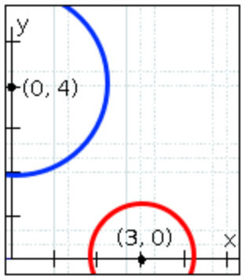
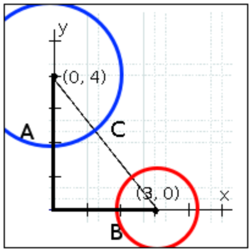
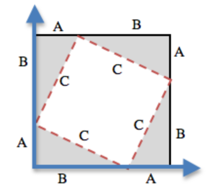
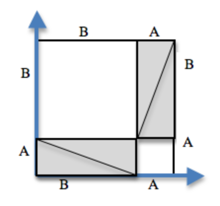

Los estudiantes derivan, discuten y aprueban el teorema de Pitágoras, luego utilizan ese teorema—en conjunto con booleanos—para detectar colisiones en sus juegos.
Los estándares con el prefijo BS son específicos de Bootstrap; Otros son del Common Core. Pase el mouse sobre cada estándar para ver sus correspondientes declaraciones de evidencia. Nuestra Documento de estándares Muestra qué unidades cubren cada estándar.
6.NS.5-8: The student performs operations with negative numbers, works with the number line and coordinate plane, order and absolute value of numbers, and solves real-world problems with rational numbers.
calculation of distance between points with the same first coordinate or same second coordinate.
8.F.1-3: The student defines, evaluates, and compares functions
description of a function as a rule that assigns to each input exactly one output
comparison of properties of two functions each represented in a different way (algebraically, graphically, numerically in tables, or by verbal descriptions)
8.G.6-8: The student uses the Pythagorean Theorem to solve real-world and mathematical problems
explanation of a proof of the Pythagorean Theorem and its converse
application of the Pythagorean Theorem to determine unknown side lengths in right triangles in real-world and mathematical problems in two and three dimensions
application of the Pythagorean Theorem to find the distance between two points in a coordinate system
A-SSE.1-2: The student interprets the structure of expressions to solve problems in context
manipulation of the structure of an expression, for example, writing x4 _ y4 as a difference of squares
F-IF.1-3: The student uses function notation to describe, evaluate, and interpret functions in terms of domain and range
description of a function using terms domain and range
F-IF.4-6: The student interprets the behavior of functions that arise in applications in terms of the context
relation of the domain of a function to its graph and, where applicable, to the quantitative relationship it describes
BS-DR.3: Given multiple test cases, the student can define a function
given examples and labeled variable(s), define the function
BS-PL.3: The student is able to use the syntax of the programming language to define values and functions
defining and using functions
BS-PL.4: The student is familiar with the syntax for conditionals
defining and using functions than involve conditionals
Duración: 85 Minutos
Glosario:
hipotenusa: el lado opuesto al ángulo de 90 grados en un triángulo rectángulo
Materiales:
Preparación:
Tipos
Funciones
Values
Number
+ - * / sqr sqrt expt
1 ,4 ,44.6
String
string-append string-length
"hello"
Image
rectangle circle triangle ellipse star scale rotate put-image
(circle 25 "solid" "red")
Boolean
= > < string=? and or
true false
Distancia 1D
Repaso
Students act out a collision in their game, and reason about the mathematical behavior of collision detection
Objetivos de aprendizaje
Students learn how to compute the distance between objects in one dimension
Declaraciones de evidencia
Students will be able to explain how a Number line is used to calculate distance in one dimension
Students will be able to explain why the line-length function uses a conditional
Resultados del Producto
Materiales
Entorno de edición (WeScheme o DrRacket con el bootstrap-teachpack instalado)
Lapiceros/lápices para los estudiantes, marcadores de pizarra para profesores
Cartel de clase (Lista de reglas, tabla de lenguaje, calendario del curso)
Tabla de Lenguaje (Vea abajo)
Preparación
Los estudiantes están registrados en WeScheme.org, o han abierto DrRacket.
Distancia 1D(Tiempo 20 min)
Distancia 1DSupongamos que dos objetos se mueven a través del espacio, cada uno con sus propias coordenadas (x,y). ¿Cuándo empiezan a superponerse sus bordes? Ciertamente se superponen si sus coordenadas son idénticas (x1=x2, y1=y2), pero, ¿y si sus coordenadas están separadas por una pequeña distancia? ¿Qué tan pequeña debe ser esa distancia antes de que sus bordes se toquen?.
[Video] Visual aids are key here: be sure to diagram this on the board!
En una dimensión, es fácil calcular cuándo se superponen dos objetos . En este ejemplo, el círculo rojo tiene un radio de 1 y el círculo azul tiene un radio de 1.5 . Los círculos se superpondrán si la distancia entre sus centros es menor que la suma de sus radios (). ¿Cómo se calcula la distancia entre sus centros? En este ejemplo, sus centros están separados por 3 unidades, porque .
¿Cambiaría la distancia entre ellos si los círculos intercambiaran lugares? ¿Por qué o por qué no?
Work through a number of examples, using a number line on the board and asking students how they calculate the distance between the points. Having students act this out can also work well: draw a number line, have two students stand at different points on the line, using their arms or cutouts to give objects of different sizes. Move students along the number line until they touch, then compute the distance on the number line. The first few seconds of our Bootstrap video show this exercise in action.
Tú archivo de juego proporciona una función llamada line-length que calcula la diferencia entre dos puntos en una línea numérica. Específicamente, la line-length toma dos números como entrada y determina la distancia entre ellos.
¿Qué respuestas esperarías de cada uno de los siguientes dos usos de line-length:
(line-length 2 5)
(line-length 5 2)
¿Esperas la mismas respuesta independientemente de si la entrada más grande o más pequeña va primero?
If you have time and want to reinforce how conditionals arise from examples, you can have students fill in blanks in Examples such as (EXAMPLE (line-length 2 5) ___), circle what’s different, and notice that the circle labels are in different orders depending on whether the first or the second input is larger. This in turn suggests that the code for line-length will need a conditional. In this case, one could avoid the conditional by taking the absolute value of the difference (the function abs does this); if you are working with older students who already know about absolute value you could show it. Using cond, however, emphasizes how code structure arises from examples.
Dezplázate hasta las funciones line-length y collide? en tu archivo de juego. Nota que la line-length utiliza un condicional para que se reste el número más pequeño del más grande.
¿Puedes explicar por qué la line-length necesita usar cond? ¿Cuáles son las dos condiciones?
The two conditions are:
A is less than B
B is less than or equal to A
Desafortunadamente, la line-length solo puede calcular la distancia entre puntos en una sola dimensión (x or y). ¿Cómo se calcularía la distancia entre los objetos que se mueven en 2 dimensiones (como los elementos de tu juego)?. La line-length puede calcular las líneas verticales y horizontales en el gráfico mostrado aquí, utilizando la distancia entre las coordenadas x y la distancia entre las coordenadas y. Desafortunadamente, no nos dice cuán distantes están los dos centros.
Dibujar una línea desde el centro de un objeto a otro crea un triángulo rectángulo, con lados A, B y C. A y B son las distancias verticales y horizontales, siendo C la distancia entre las dos coordenadas. La line-length se puede utilizar para calcular A y B, pero ¿cómo podemos calcular C?
Students’ gamefiles all have a value called *distances-color*, which is set to the empty string "". By changing this to a color such as "yellow" or "red", the game will draw right triangles between each game character, and fill in the lengths for each side. You may want to demonstrate this using your own game file, and have the students follow along. Hint: to make it as easy as possible to see these triangles, set your background to be a simple, black rectangle and slow down the animation functions.
En un triángulo rectángulo, el lado opuesto al ángulo de 90-grados se denomina hipotenusa. Pensando de nuevo en nuestra detección de colisión, sabemos que los objetos chocarán si la hipotenusa es menor que la suma de sus radios. Saber la longitud de la hipotenusa será esencial para determinar cuando ocurre una colisión.
Distancia 2D
Repaso
Students explore the Pythagorean Theorem using shapes on paper, then reason about the mathematical behavior of collision detection
Objetivos de aprendizaje
Students learn that two-dimensional distance corresponds to the hypotenuse of a right triangle
Students learn how to compute the distance between objects in two dimensions
Declaraciones de evidencia
Students understand that two-dimensional distance needs a different computation than one-dimensional distance
Students can draw out the right triangles that compute the distance between two coordinates
Students understand that geometric manipulation is a useful tool for figuring out certain computations
Some students can use geometric manipulation to derive the Pythagorean Theorem
Students can state the Pythagorean Theorem
Students can turn the Pythagorean Theorem into code by writing a distance function
Resultados del Producto
Los estudiantes escriben la función de distancia en sus archivos de juego.
Materiales
Entorno de edición (WeScheme o DrRacket con el bootstrap-teachpack instalado)
Distancia 2D Las civilizaciones antiguas tenían el mismo problema: ¡también se esforzaban por encontrar la distancia entre puntos en dos dimensiones! Trabajemos en una manera para pensar sobre este problema: ¿qué expresión calcula la longitud de la hipotenusa de un triángulo rectángulo?
Echa un vistazo a un, video de este problema, ¡y luego explóralo tú mismo!
[Credit: Tova Brown]
This exercise is best done in small groups of students (2-3 per group). Pass out Pythagorean Proof materials [1, 2] to each group, and have them review all of their materials:
A large, white square with a smaller one drawn inside
Four gray triangles, all the same size
Para cualquier triángulo rectángulo, es posible dibujar una imagen donde la hipotenusa se utiliza para los cuatro lados de un cuadrado. En el diagrama mostrado aquí, el cuadrado blanco está rodeado por cuatro grises, triángulos rectángulos idénticos, cada uno con lados A y B. El cuadrado tiene cuatro lados idénticos de longitud C, que son las hipotenusas para los triángulos. Si el área de un cuadrado se expresa por , entonces el área del espacio en blanco es .
Have students place their gray triangles onto the paper, to match the diagram.
Al mover los triángulos grises, es posible crear dos rectángulos que encajen dentro del cuadrado original. Mientras que el espacio ocupado por los triángulos ha cambiado, no se ha vuelto más grande o pequeño. Del mismo modo, el espacio en blanco se ha dividido en dos cuadrados, pero en total permanece del mismo tamaño. Al usar las longitudes laterales A y B, se puede calcular el área de los dos cuadrados.
¿Cuál es el área del cuadrado más pequeño? ¿La del cuadrado más grande?
You may need to explicitly point out that the side-lengths of the triangles can be used as the side-lengths of the squares.
El cuadrado más pequeño tiene un área de , y el cuadrado más grande tiene un área de . Dado que estos cuadrados son sólo el cuadrado original dividido en dos piezas, sabemos que la suma de estas áreas debe ser igual al área del cuadrado original:
¿Funciona la misma ecuación para cualquier valor de A y B?
Para obtener C por sí mismo, tomamos la raíz cuadrada de la suma de las áreas:
Ve a la Página 1 de tu libro de ejercicios - veras la misma fórmula
escrita, esta vez utilizando line-length para calcular la distancia a lo largo de los ejes x-y. El Círculo de Evaluación
ya ha sido parcialmente completado aquí, pero tendrás que terminarlo por tu cuenta. Una vez que hayas terminado, convierte ese círculo
en código en la parte inferior de la página.
Remind students that A and B are the horizontal and vertical lengths, which are calculated by line-length.
El código de la Página 1 calculará con precisión la distancia entre dos objetos cuyos centros están en (3,0) y (0,4). Pero, ¿qué pasa con otros puntos? Sería bueno tener una función que calcula la distancia para cualquier dos conjuntos de puntos.
Ve a la Página 1 de tu libro de ejercicios y utiliza la receta de diseño para escribir tu función de distance.
Ten la libertad de usar tu trabajo de la página anterior como tu primer ejemplo, y luego regresa con uno nuevo.
WARNING: make sure students are giving line-length the proper coordinates! Many students mistakenly pair px and py
together, rather than pairing the x-coordinates. Check student work carefully!
¿Choque?
Repaso
Students reason about the mathematical behavior of collision detection
Objetivos de aprendizaje
Students learn how to use the distance formula to detect collisions in games
Declaraciones de evidencia
Students understand that collisions occur when the distance between objects is below some threshhold
Students understand how to determine the collision threshhold between two objects
Students write a collide? function that determines whether the player and danger elements in their games have collided
Resultados del Producto
Los estudiantes agregan una función collide? a sus juegos para detectar cuando el jugador y el peligro han chocado
Materiales
Entorno de edición (WeScheme o DrRacket con el bootstrap-teachpack instalado)
Todas las computadoras de los estudiantes deben tener sus plantillas de juego precargadas, con sus archivos de imagen enlazados
Lapiceros/lápices para los estudiantes, marcadores de pizarra para profesores
Cartel de clase (Lista de reglas, tabla de lenguaje, calendario del curso)
Tabla de Lenguaje (Vea abajo)
¿Choque?(Tiempo 25 min)
¿Choque?A estas alturas, haz definido una función llamada distance: tiene cuatro entradas numéricas (representando al jugador X, jugador Y, peligro X y peligro Y) y produce un número que representa la distancia entre esas coordenadas. Si el jugador está parado en (320, 240) y el peligro está en (400, 159), la distancia se puede calcular evaluando (distance 320 240 400 159).
Para cada una de las siguientes coordenadas de jugador y peligro, escribe la expresión que utiliza la función de distance para calcular la distancia entre los puntos. Puedes escribir en código o en un Círculo de Evaluación:
El jugador está en (100, 225) y el peligro está en (174, 300)
El jugador está en (48, 20) y el peligro está en (210, 160)
El jugador está en (300, 60) y el peligro está en (130, 240)
Ahora que sabes cómo calcular la distancia entre dos objetos, debes decidir cuándo dos objetos han colisionado. Hemos discutido esto antes en la unidad utilizando círculos: dos círculos chocan cuando la distancia entre ellos es menor que la suma de sus radios. Si tus objetos tienen esquemas más interesantes que círculos, este cálculo puede ser difícil de hacer con precisión. Afortunadamente, la mayoría de los juegos no tienen que ser precisos (se mueven demasiado rápido para que la gente vea el momento exacto del impacto). Sólo tenemos que averiguar cuándo los elementos están lo suficientemente cerca, y utilizar eso para detectar la colisión.
You can spend additional time on this point by having students think about collision distances between different shapes. The rest of Bootstrap doesn’t require this, but this may be a good point to integrate additional geometry if you are teaching math.
A menos que las imágenes seleccionadas para tu juego sean muy pequeñas, 50 pixeles es generalmente una distancia suficiente para detectar las colisiones entre tu jugador y su peligro. Si estas utilizando imágenes muy pequeñas, es posible que desees detectar una colisión cuando la distancia entre los caracteres sea inferior a 20.
¿Cómo podrías comprobar si la distancia entre (320, 240) y (400, 159) es menor de 50? ¿Cómo podrías comprobar si la distancia entre esas coordenadas es menor de 20?
Ve a la Página 1 de tu libro de trabajo, y utiliza la receta de diseño para escribir una función que produzca true si la distancia entre dos coordenadas es menor de 50. SUGERENCIA: ¡Deberías utilizar tu función de distance!
¿Ingresar tu collide? Definición de la función en tu archivo de juego. Juega tu juego y haz que tu jugador colisione con su peligro. ¿Tu juego ahora hace algo diferente de lo que hizo antes de que escribieras collide??
Concluyendo
Repaso
Objetivos de aprendizaje
Resultados del Producto
Materiales
Preparación
Concluyendo(Tiempo 5 min)
Concluyendo¡Felicidades - tu juego está completo! Tómate un minuto para desplazarte por todo el código que has estado escribiendo y piensa
en que tanto has aprendido: Los Círculos de Evaluación, tipos de datos como Number, String, Image
y Boolean, la importancia de los Contratos, Declaraciones de Propósito y funciones por partes. Has aprendido un nuevo
lenguaje de programación y, lo que es más importante, has aprendido la Receta de Diseño, que te permite resolver problemas de palabras
y retos de programación concentrándote en un solo paso a la vez, asegurándote de que cada paso se comprueba contra el
que venía antes.
Una vez que los programadores consiguen que algo trabaje, vuelven siempre sobre su código y se cercioran que es legible,
claro y fácil para que los demás lo entiendan. Un coche que funciona bien podría ser agradable, pero no vale mucho
¡si es imposible para un mecánico repararlo o actualizarlo! Asegúrate que tu código sea hermoso, por dentro y por fuera.
¿Cada función tiene su contrato escrito correctamente?
¿Cada función tiene una declaración de propósito que describe exactamente lo que hace?
¿Cada función tiene por lo menos dos ejemplos?
Cuando hace clic en "Run", ¿pasan todos sus ejemplos?
Have students volunteer what they learned in this lesson
Reward behaviors that you value: teamwork, note-taking, engagement, etc

 Al mover los triángulos grises, es posible crear dos rectángulos que encajen dentro del cuadrado original. Mientras que el espacio ocupado por los triángulos ha cambiado, no se ha vuelto más grande o pequeño. Del mismo modo, el espacio en blanco se ha dividido en dos cuadrados, pero en total permanece del mismo tamaño. Al usar las longitudes laterales A y B, se puede calcular el área de los dos cuadrados.
Al mover los triángulos grises, es posible crear dos rectángulos que encajen dentro del cuadrado original. Mientras que el espacio ocupado por los triángulos ha cambiado, no se ha vuelto más grande o pequeño. Del mismo modo, el espacio en blanco se ha dividido en dos cuadrados, pero en total permanece del mismo tamaño. Al usar las longitudes laterales A y B, se puede calcular el área de los dos cuadrados.